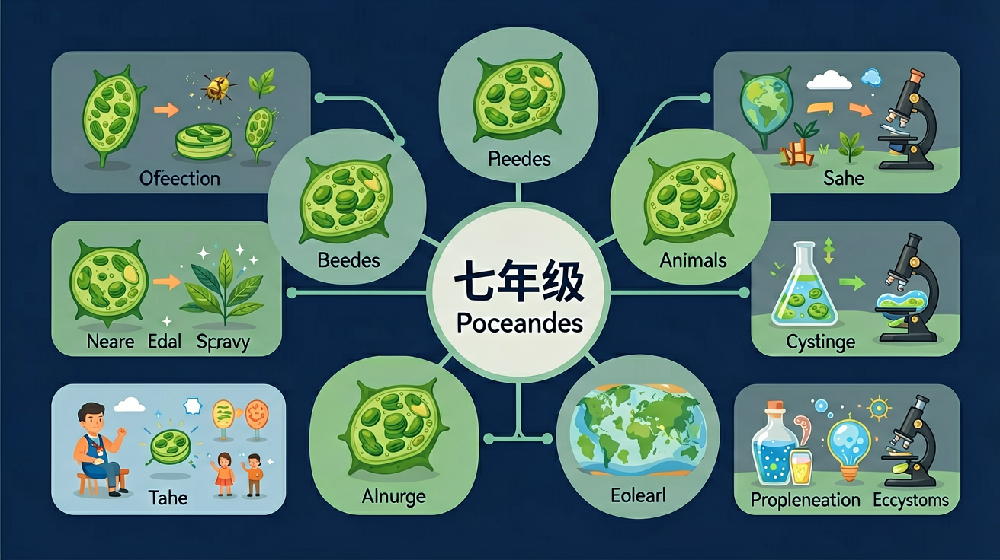

探索地球上最大的生命系统——生物圈的范围、各类生态系统及其相互联系

🎯 能说出生物圈的范围和组成
🎯 能判断不同生态系统是否属于生物圈
🎯 能分析人类活动对生物圈的影响
地球上有森林、海洋、草原、荒漠……这些都是不同的生态系统，它们各自独立又相互联系。
一条河流里的污染物，最终会流入海洋，影响海洋生物。这说明不同生态系统之间存在怎样的联系？地球上所有生态系统构成了什么？
本课将带你认识生物圈的范围，了解地球上各类主要生态系统，理解生物圈是最大、最复杂的生态系统，是地球上所有生物共同的家园。
大气底部+水圈大部+岩石圈表面
最大的生态系统，调节气候
"地球之肺"，生物多样性最高
所有生态系统共同构成生物圈
❓ 为什么说生物圈是最大的生态系统？
❓ 生物圈和其他生态系统有啥不一样？
❓ 要是生物圈没了会怎样？
学完这一课，这些问题你都能自信地回答。
生物圈包含哪些圈层？
下列哪个不属于生物圈？
生物圈是指地球上所有生物及其生活环境的总称，是地球上最大的生态系统。
生物圈的范围：
生物圈厚度约20km，但绝大多数生物集中在水面上下100m的范围内。
点击下方生态系统了解详情：
生物多样性最高
最大，调节气候
水分介于林荒之间
极端干燥，物种少
河流、湖泊、湿地
人工生态系统
动画展示生物圈在地球上的位置以及不同圈层与生物的关系。
生物圈=岩石圈上层+水圈+大气圈下层
地球上所有生物及其生存环境的总和
比森林/海洋等单一生态系统大得多
想象地球像苹果，生物圈只是苹果皮那么薄
保护生物圈要从保护身边小环境做起
将下方生态系统拖入对应的大类
关于生物圈的正确叙述是
改进现有生态瓶使其长期稳定
先独立作答，再点选项查看对错与错因。
生态瓶壁的绿色斑点最可能是
小鱼活动减少的主要原因是
该生态瓶可类比生物圈的
水草通过____作用为小鱼提供氧气
答案：光合
光能转化为化学能
生态瓶需要放在有____的地方维持平衡
答案：光照
能量输入来源
✅ 生物圈包含三大圈层
💡 忽略教材图示范围
✅ 极端环境也有微生物
💡 对'所有生物'理解片面
口诀：大气水土三圈层，所有生物都是圈里人
类比：像小区物业，管着所有住户（生物）的生存环境
生物圈 = 地球上所有生态系统之和，范围覆盖大气圈底部、水圈大部、岩石圈表面。说它"最大"，是因为没有任何一个生态系统能比它更宏观、更包容。
🔗 关键洞察：生态系统彼此相连。各个生态系统并非孤岛，而是通过物质循环（如水循环、碳循环）和能量流动紧密联系。一条河被污染，最终会顺着水流进入海洋；大气中的气体全球共享。
🌐 启示：保护任一局部生态系统，实际是在保护整个生物圈——牵一发而动全身。这也是"生态文明"强调系统治理的深层逻辑。
生物圈 = 地球上最大的生态系统
范围：大气底部（约10km）+ 水圈大部（约11km）+ 岩石圈表面（约3km）
森林 → 生物多样性之冠 | 海洋 → 面积最大 | 荒漠 → 最恶劣
⚠️ 各生态系统相互联系，共同构成生物圈！
（中考真题）生物圈为生物生存提供的基本条件不包括
迁移题：永久生态瓶能模拟生物圈因为
如果臭氧层空洞扩大，直接影响生物圈的哪个功能？
当前节点在中间列高亮显示